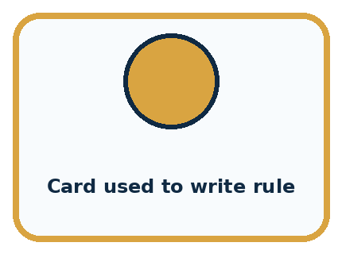
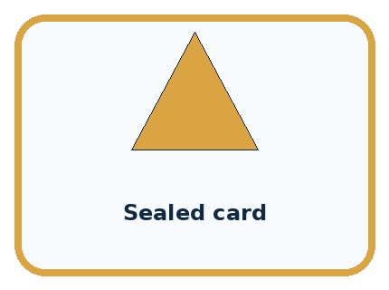
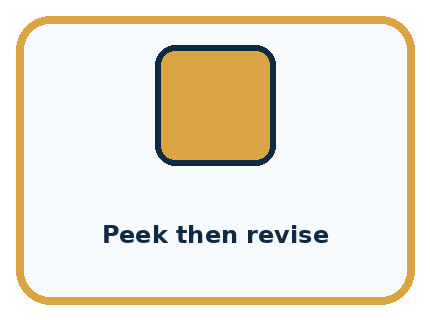

AI Academy · Level 1 · Grade 6 · Week 15 · Student lesson
Save New Examples for Testing
Learn to understand, design, build, test and explain AI systems responsibly.
Project: Helpful Classroom Sorter
THE CONNECTED WEEK
Freeze the model. Keep the first result.
Separate development and evaluation, inspect completed experiments and run a new versioned envelope protocol.
Keep one habit: Reserve first → freeze and predict → reveal and report without rewriting history.
Main lesson · Section 1
When is a test still independent?
Record a frozen model and predictions before labels are revealed, then describe any revision honestly.
Start with an improved replay
A model can improve after feedback while its new score becomes a development result. Keep the original frozen model’s predictions so the first test is not rewritten after the revision.
Retrieve validation versus correctness
A height passes the input contract and the model predicts tall. What is still needed to check that prediction? If its comparison label changes your threshold choice, what role has that example played?
Close your notes first. A rough first answer helps us choose the right starting point; it is not a score for your ability.
After trying, check the relevant lesson or ask your teacher. Change the part of your explanation that the evidence shows was wrong.
By the end, you can…
I can separate examples used to choose a model from examples reserved for its final evaluation.
I can record a fixed model and its predictions before revealing comparison labels.
I can explain how test feedback changes the evidence available for a revised model.
Earlier wording, alternatives and picture transcripts
Your learning target
Remember before reading
Without opening the old lesson, explain one key idea from Build a Human Classifier. Give an example and a mistake that the idea helps you avoid.
Without opening the old lesson, explain one key idea from Debug the Cause. Give an example and a mistake that the idea helps you avoid.
Without opening the old lesson, explain one key idea from Algorithms as Recipes. Give an example and a mistake that the idea helps you avoid.
A fair test uses examples not used to create the decision process.

LEARNING TARGET Eight cards are used to invent a rule. Four sealed cards are then opened; the team changes its rule after seeing errors. Can those four cards still be called an untouched final test? Plan what to do next.
Learner name:
Readiness for the connected explanation
This week’s end goal
By the end, I can freeze a model before labels are revealed and report a bounded test result.
Main lesson · Section 2
Separate development from evaluation before looking
The protocol fixes the model before reserved inputs and their labels are used to judge it.
Reserve examples before development
A rule chosen to fit examples may work differently on new cases. To investigate that difference, reserve a set of examples before development. Use the development examples to choose the model.
Keep the final test examples separate until the model is fixed, then evaluate that recorded model.
Freeze the model and preserve predictions
In this paper activity, a teacher keeps the reserved examples in an envelope. Record the input contract, feature, category rule and model version before opening it.
Once the input values are revealed, predict using the frozen model before revealing their comparison labels. This prevents copying the labels into the predictions.
Distinguish a completed demonstration from your new experiment
The worked example below describes a completed experiment, so its test labels are visible for discussion. It is not an unseen test for you.
In the workbook experiment, the teacher will supply a separate set of comparison labels after you have saved your predictions. All data are imaginary classroom records.
Explain the order of evidence
What must be recorded before the envelope opens? What must be saved before the comparison labels are revealed? Explain why the visible worked example is practice for you rather than an unseen test.
Earlier wording, alternatives and picture transcripts
PICTURE STORY
Look Closely Before You Explain
Pictures give clues; evidence tells us what the clues mean.

MYSTERY If a sorter sees every mystery card while its rule is being created, later success on those same cards does not show transfer.
What do you notice?
Name three visible details without explaining them yet.
Circle the detail most connected to the system's decision.
Name one detail that may be decoration or distraction.
Make a first prediction and state the clue that supports it.
My observations, prediction, and evidence:
GOOD THINKING A prediction can change when stronger evidence appears.
A closer explanation
Main lesson · Section 3
Freeze, predict, reveal and compare
The model version links each result to the procedure actually evaluated.
Read the three evidence stages
Different roles for development and final testing
Identify the completed experiment’s frozen TowerA
In the completed experiment, development towers at heights 2, 4, 6 and 8 cm have labels short, short, tall and tall. Candidates predict tall at or above 5 or 6 cm.
Both fit all four labels; the stated smaller-threshold tie rule selects 5. The team freezes model TowerA with threshold 5.
Save predictions on the reserved inputs
The reserved inputs are different records at heights 3, 5, 7 and 9 cm. TowerA accepts whole cm heights from 1 through 10. It predicts short, tall, tall and tall.
These predictions are saved before the reserved labels are opened. The comparison below records what happened, including the failure.
Explain a stage transition
Point to the input, the deciding step and the result in this week’s visual. Explain the same step in ordinary words. A picture helps when you can say what each part represents.
Earlier wording, alternatives and picture transcripts
VISUAL MECHANISM
Input → Process → Output
Follow the information instead of imagining magic inside the machine.


INPUT all labeled cards
PROCESS separate training and untouched testing before rule creation
OUTPUT honest performance evidence on new cards
CORE IDEA A fair test uses examples not used to create the decision process.
UNDER THE HOOD Evaluation on training data is optimistically biased. A holdout test set estimates behavior on unseen examples only if it remains untouched during design.
Repeatedly tuning to test results leaks information and turns the test into training.
Draw a fresh example with all three stages:
A closer explanation
Connect the picture and the explanation
Main lesson · Section 4
Compare development, evaluation and feedback use
Ask which examples or scores influenced a model choice before calling a result an independent test.
Pictures paired with their evidence


The case to investigate
CASE 1 — Card used to write rule Clue: belongs in learn pile. Meaning: training evidence.


The case to investigate
CASE 2 — Sealed card Clue: unseen until final run. Meaning: test evidence.


The case to investigate
CASE 3 — Peek then revise Clue: test influenced process. Meaning: leakage.

Discuss the confusing pair
Which two pictures are easiest to confuse? What evidence separates them?
Keep the limit in view
BOUNDARY A test set stops being independent when its answers guide revisions.
Earlier wording, alternatives and picture transcripts
PICTURE GALLERY
Four Cases, Four Clues
Use the visual cue, then read the evidence carefully.
CASE 1 — Card used to write rule Clue: belongs in learn pile. Meaning: training evidence.
CASE 2 — Sealed card Clue: unseen until final run. Meaning: test evidence.
CASE 3 — Peek then revise Clue: test influenced process. Meaning: leakage.
CASE 4 — Fresh local card Clue: new after design. Meaning: strong transfer check.
Change one thing in the pictured case
Change: After feedback, change the boundary to 5.
Prediction: The revised rule matches all four known labels but needs a different final test.
Reason: These labels influenced the revision, so replaying them is evidence of repair rather than unseen performance.
Main lesson · Section 6
Keep the original three-of-four result
This completed PencilP demonstration has visible labels for discussion; it is supported practice.
The frozen model, reserved inputs and completed label record
A fictional envelope exercise evaluates a fixed pencil-length sorter.
Freeze PencilP: long at least 6 cm; short below 6.
Reserved valid lengths are 3,5,6,9 cm. Teacher envelope labels, revealed only after predictions, are short,long,long,long.
Compare saved predictions with revealed labels


Trace the evaluation sequence


State the bounded 3/4 result
The prediction record must exist before the labels are seen. PencilP scores 3/4=75% agreement on these four selected cases.
Moving the boundary after inspecting the envelope makes this a development exercise; the same four cases can no longer serve as untouched final evaluation.
Predict after the feedback-guided revision
Before checking, revise PencilP’s boundary from 6 to 5 after the visible feedback. Predict the replay labels. Explain why its result on these already-seen records has a different evidence role from the original frozen prediction record.
Check the replay and its evidence role


Limit the claim beyond four selected cases
Four selected cases cannot establish a reliable accuracy rate for every future pencil or classroom.
Explain why a replay does not replace the original
Read the labelled picture: Does 4/4 on the replay replace the original 3/4 result? Explain.
Earlier wording, alternatives and picture transcripts
WORKED EXAMPLE
Watch the Reasoning, Not Just the Answer
Every step connects a claim to observable evidence.

CASE If a sorter sees every mystery card while its rule is being created, later success on those same cards does not show transfer.
STEP 1 — OBSERVE all labeled cards
STEP 2 — TRACE separate training and untouched testing before rule creation
STEP 3 — CONCLUDE honest performance evidence on new cards
MODEL REASONING Randomly or deliberately reserve representative cards first. Create the decision process using only the learning pile.
Open the test pile once for evidence, record every result, and do not call the revised process tested until a new holdout exists.
DO NOT OVERCLAIM A test set stops being independent when its answers guide revisions.
What new evidence could change this answer?
A closer explanation
| Reserved height | Saved TowerA prediction | Revealed comparison label |
|---|---|---|
| 3 cm | Short | Short |
| 5 cm | Tall | Short |
| 7 cm | Tall | Tall |
| 9 cm | Tall | Tall |
TowerA agrees on three of these four reserved examples and disagrees at 5 cm. That is evidence about this fixed model on this small set. It does not prove a success rate for every future tower.
The labels, range of examples and way records were selected also matter.
After seeing the 5 cm label, the team changes the threshold to 6 and names the revision TowerB. TowerB agrees on all four of these now-seen examples.
The change may be useful, but those examples have influenced its development. Four agreements on them are not an independent final test result for TowerB. Keep TowerA’s original three-of-four record.
Learn from the worked case
Cover the result before checking it. Say what is given, choose the procedure, and follow one step at a time. Then uncover the result and explain your first mismatch. Ask why a step is allowed, not only what number it produces.
A pictorial worked case: Save New Examples for Testing
The facts we will use


Read the picture one step at a time
Why this result follows
What this example does not establish
Change one thing: After feedback, change the boundary to 5. Predict the result before checking the explanation. What remains the same?
Main lesson · Section 7
Unseen is necessary but coverage also matters
Copies and easy near-duplicates can make an apparently reserved set weak evidence.
Inspect how records were selected
Keeping a set unseen is necessary for this kind of independent check, but secrecy alone does not make it a good test. Four near-identical easy cases provide little evidence about varied cases.
Copies of development records can also make a reserved set misleading even if their file names differ.
Plan for the intended use and retained outcomes
Define what future cases the model is meant to handle and choose evaluation examples that address that use. Keep related or copied records together when separating sets.
Record invalid inputs and no prediction outcomes separately instead of quietly dropping them from the report. Later weeks examine coverage and performance comparisons in more detail.
Repair the best-of-ten-test-scores claim
CLAIM A Testing on familiar cards is fair because there are more correct answers.
CLAIM B Looking at test cards without labels cannot affect design.
STRONG ANSWER FRAME I claim ______ because the evidence shows ______. The process is ______. One limit is ______.
Earlier wording, alternatives and picture transcripts
COMPARE
Same Result, Different Reason
A comparison helps reveal the true concept boundary.
| Case | Evidence | What it shows |
|---|---|---|
| Card used to write rule | belongs in learn pile | training evidence |
| Sealed card | unseen until final run | test evidence |
| Peek then revise | test influenced process | leakage |
| Fresh local card | new after design | strong transfer check |
Repair two tempting claims
Repair:
Repair:
A closer explanation
Main lesson · Section 8
Practise: report both model versions honestly
A revised model may use feedback, but it needs fresh appropriate evidence for a new independent evaluation.
Keep improvement and evaluation roles separate
Improvement after a test is allowed. State that the old test informed the revision, preserve both versions, and reserve fresh appropriate examples to evaluate the revised model independently.
If none are available, report that limitation instead of inventing a fresh test result.
Recognise selection through repeated test scores
A test can lose independence even when you never copy its labels into a training table. Repeatedly trying thresholds and choosing the one with the best test score also uses test information to choose the model.
Separate development comparisons from the final check.
Use W2 to preserve the original result
Use workbook W2 for the connected example “Keeping final tests unseen”. First fill the input and rule boxes. Try the middle steps before asking for a hint. After a hint, try the next step yourself.
| Plan | Do | Check |
|---|---|---|
| What is given? Which rule or procedure applies? | Record each intermediate step. | Does the result follow? What remains unknown? |
Explain your trace to a partner. Your partner points to one step to check. Swap roles on the next case. Each person writes their own explanation.
Challenge “a new file makes records unseen”
Use the worked case for Keeping final tests unseen. Proposed explanation: “A new file makes old records unseen”. Decide whether this explanation is supported.
Point to the step or supplied fact that decides; explain your repair if needed.
Answer on your own before discussion. If you are unsure, say which step you need help with.
Explain the pictured replay
Does 4/4 on the replay replace the original 3/4 result? Explain.
This is supported practice. Keep the separately named independent case for an attempt before feedback.
Earlier wording, alternatives and picture transcripts
GUIDED PRACTICE
Try It, Check It, Explain It
Use support now so you can succeed independently later.

Explain how the picture story demonstrates this idea: A fair test uses examples not used to create the decision process.
Use a fresh example to explain training set.
Trace a new input → process → output example.
Find and repair the error in: Looking at test cards without labels cannot affect design.
Invent one edge case and name the safe response.
PARTNER CHECK Point to the evidence. Do not accept an answer that only repeats the vocabulary word.
A closer explanation
Practise with less help: Preserve the original result
Check your reasoning
Explain the picture
Main lesson · Section 9
Investigate a learn/test envelope protocol
Use supplied development records, a declared selection policy and teacher-held comparison labels.
Development cards and model-selection rules
Use imaginary rod records. Development examples are 1 cm=SHORT and 5 cm=LONG. Candidate boundaries 3 and 4 predict LONG at or above the boundary and SHORT otherwise. Choose fewer disagreements; a tie prefers the larger boundary. Accept whole centimetres 1–6. Before opening the reserved-input envelope, record the selected rule and version RodD.
Freeze, predict, reveal and preserve
The separate reserved inputs are 2,3,4,6 cm. Save all four RodD predictions before your teacher reveals their comparison labels from the guide. Compare once and keep the original record. If you then revise the boundary using that feedback, name a new version and describe its replay as development evidence. Keep this supported exercise separate from the independent RibbonA experiment.
Keep a normal case and an edge case clearly separated.
Record what happened—even when it does not match your prediction.
Explain the result, one limitation, and the next useful test.
Keep versions and evidence roles
| Case | Prediction | Observed result | What it means |
|---|---|---|---|
| Normal | |||
| Edge |
Before trying: what do I expect, and why? While trying: which step could first go wrong? Afterwards: what did I actually observe, and what should change? Keep “not run” if you only traced the procedure.
Earlier wording, alternatives and picture transcripts
EXPLORER LAB
Learn/Test Envelope Split
Predict first, test honestly, and explain what the evidence means.

State your prediction before the result is known.
Complete the task: Split card data into learn and test piles before sorting.
INDEPENDENCE After support is removed, repeat the proof with a fresh case.
Plan → try → check
Main lesson · Section 14
Try alone: run the separate RibbonA experiment
Freeze RibbonA and save its predictions before asking for the teacher-held comparison labels.
The new protocol and reserved inputs
Before receiving any test labels, freeze RibbonA: whole cm lengths 1 through 12, long at least 6 cm and short otherwise. Save predictions for 5, 7, 9 and 11 cm.
Ask your teacher to reveal the reserved labels, then record agreements, disagreements and a limited result statement.
If you later choose threshold 8 after seeing these labels, explain how you must describe its result on the same records.
Keep one first attempt
Attempt this case before feedback. Record any help. Earlier examples below are further practice; a case already practised with feedback cannot establish fresh transfer.
Your teacher has the independent answer and scoring criteria. Complete the matching workbook week to keep your practice evidence together.
Use feedback afterwards
Attempt the independent case before hints. Record whether you worked alone, used a hint or followed a model. After feedback, fix the first unsupported step and explain why it changed.
A later check uses a changed case, not a copied answer.
Earlier wording, alternatives and picture transcripts
Independent case: Run a separate ribbon experiment
Week 15 Independent application
Close the worked explanation. Apply the idea to this different question without copying.
You teach a sorter using cards A, B and C. You keep D and E unseen. Which cards provide the fairer first test? What changes if you show D during teaching?
My answer, with a trace, calculation or supporting evidence
Create and test
Change one relevant detail. Predict the result before testing. Include a boundary or missing-information case when it helps reveal a limit.
My changed input and expected result
Connect to your project
Create separate learn and test envelopes for the Classroom Sorter and label who may open each.
The evidence I will keep
Transfer practice from the original programme
Eight cards are used to invent a rule. Four sealed cards are then opened; the team changes its rule after seeing errors. Can those four cards still be called an untouched final test? Plan what to do next.
Use feedback to improve
Main lesson · Section 11
Reserve project cases before using their answers
Keep dated sorter versions and a record of which examples shaped each revision.
This week’s project decision
THIS WEEK'S CHECKPOINT Create separate learn and test envelopes for the Classroom Sorter and label who may open each.
Maintain dated sorter versions and separate development examples from reserved project-evaluation cases.
Plan envelopes, predictions and review
What real classroom need does this serve?
What information is necessary—and what should stay private?
What happens inside the process?
What normal and edge cases will you test?
When should it say not sure or ask a person?
Keep test feedback’s influence visible
RESPONSIBLE DESIGN A test set stops being independent when its answers guide revisions.
Earlier wording, alternatives and picture transcripts
PROJECT
Helpful Classroom Sorter
Build one coherent system across the year, one evidence-based decision at a time.


My project decision:
Evidence for your project
Main lesson · Section 16
Finish: name the model and the role of its score
Close your notes and explain what was reserved, what was revised and what remains untested.
Your exit explanation
Close your notes. Explain this goal in your own words: Separate examples used to choose a model from examples reserved for its final evaluation
Choose support and revisit later
If you are unsure, return to the worked picture and explain one arrow. If you are ready, change an input or assumption and justify your prediction.
Save your workbook evidence. At the next review, try a different case before opening your old answer.
Reference bank and extra practice
Choose the reference that helps your next step.
Your quick word guide
Reference · Section 5
Your quick word guide
Use the words to explain a particular step, record or limit.
Core vocabulary
| Word | Meaning | My example |
|---|---|---|
| training set | examples used to create or adjust a process | |
| test set | untouched examples used for final checking | |
| holdout | data deliberately kept separate | |
| data leakage | test information influences design |
Terms for the connected explanation
| Word | Meaning |
|---|---|
| Development examples | Examples available for fitting, comparing or revising a model |
| Held-out test set | Examples reserved from development for evaluating a fixed model |
| Freeze | Record a model and stop changing it for a particular evaluation |
| Test leakage | Information from a reserved test influencing model development |
| Evaluation record | A record of the tested model, predictions, comparison labels and results |
Repair a claim using a word
CLAIM TO REPAIR Testing on familiar cards is fair because there are more correct answers.
Use one vocabulary word and one piece of evidence to repair it:
Earlier wording, alternatives and picture transcripts
VOCABULARY
Words You Can See and Use
The badge is a memory cue; the definition does the real thinking work.


Misconception detective
WORD POWER A strong definition helps you decide something in a new case.
Words used in the closer explanation
Choose a stronger thinking challenge
Reference · Section 10
Choose a stronger thinking challenge
Choose the next useful challenge rather than treating the whole ladder as compulsory.
Pick your next step
RECALL Define training set.
EXPLAIN A fair test uses examples not used to create the decision process.
TRACE Show the input, process, and output.
DIAGNOSE Repair: Testing on familiar cards is fair because there are more correct answers.
TRANSFER Apply the idea to a new home or classroom case.
CREATE Design one revealing test.
DEFEND Give a claim, evidence, mechanism, limit, and safe action.
Earlier wording, alternatives and picture transcripts
PRACTICE LADDER
Climb from Recall to Defense
Each step asks for a stronger kind of understanding.

RETRY RULE A coached answer becomes mastery only after you solve a different case independently.
Reference: check your explanation
Reference · Section 12
Reference: check your explanation
Use after practice. Run a separate ribbon experiment is the selected independent case.
Check the evidence and its limit
□ Name or draw the fresh case.
□ Trace input, process, and output.
□ State the conclusion and strongest evidence.
□ Name one limit, failure, missing clue, or fairness/privacy concern.
□ Explain one safe next action or improvement.
Record support
My level: □ Not yet □ With one hint □ Independently □ I can teach it
Earlier wording, alternatives and picture transcripts
MASTERY
Checklist for explaining this week’s idea
Use after practice. Run a separate ribbon experiment is the selected independent case.

EXPLANATION CHECK Freeze the version, save predictions before labels, retain the original result and explain when test feedback becomes development evidence.
Independent evidence:
SELF-CHECK Randomly or deliberately reserve representative cards first. Create the decision process using only the learning pile.
Open the test pile once for evidence, record every result, and do not call the revised process tested until a new holdout exists.
NEXT BRIDGE Carry today's evidence habit into: Boundaries and 'Not Sure'.
Extra practice: Keep the final cards unseen
Reference · Section 13
Extra practice: Keep the final cards unseen
Try the question before opening its worked explanation.
Read the supplied case and question
Cards A–F are used for practice. G and H remain sealed.
Which can provide a fresh test, and under what condition?
Your explanation
Which detail supports the answer, and why does it matter?
Check after trying
G and H, only if neither influenced teaching or revision. Familiar cases do not establish unseen performance. Keep final test answers separate.
| Evidence or stage | Value or result |
|---|---|
| Practice A–F | 6 |
| Sealed test G–H | 2 |
Earlier wording, alternatives and picture transcripts
Week 15 Worked case
Use the supplied details to practise the weekly concept before attempting the independent question. This case extends the illustrated lesson.
The situation
The question
Worked explanation
Explain it in your own words
Trace the supplied case visually
Keep the final cards unseen
Cards A–F are used for practice. G and H remain sealed.
Which can provide a fresh test, and under what condition?
G and H, only if neither influenced teaching or revision. Familiar cases do not establish unseen performance. Keep final test answers separate.
Reference: original lesson checklist
Reference · Section 15
Reference: original lesson checklist
Use an additional checklist when it helps inspect your explanation.
Targets and evidence
| By the end, I can | How I will show it |
|---|---|
| Separate examples used to choose a model from examples reserved for its final evaluation | Explain the deciding step, show a trace or test, and state one limit. |
| Record a fixed model and its predictions before revealing comparison labels | Explain the deciding step, show a trace or test, and state one limit. |
| Explain how test feedback changes the evidence available for a revised model | Explain the deciding step, show a trace or test, and state one limit. |
Keep your route and first prediction
Remember → watch and explain → try with help → investigate → try independently → keep project evidence. Your teacher may spread this lesson across several classes.
Keep your first prediction. Compare it with what the evidence shows and explain any change.
Earlier wording, alternatives and picture transcripts
Start with this question: A fictional envelope exercise evaluates a fixed pencil-length sorter.
Extra practice: pictures, repair and feedback
Reference · Section 17
Extra practice: pictures, repair and feedback
Attempt each question before opening its explanation. Use one browser or paper copy.
First supported question
A fictional envelope exercise evaluates a fixed pencil-length sorter.
Which labelled step matches this detail? Three of four agree; the disagreement is at 5 cm.
1. Reveal references
2. Compare
3. Freeze
4. Predict
Hint if needed: Read the steps in the pictorial case. Match the supplied detail to the stage that performs or records it.
Practice 1: explain the deciding evidence
Check the first explanation
After your attempt, compare with the supported explanation: Compare Three of four agree; the disagreement is at 5 cm. The prediction record must exist before the labels are seen.
PencilP scores 3/4=75% agreement on these four selected cases. Moving the boundary after inspecting the envelope makes this a development exercise; the same four cases can no longer serve as untouched final evaluation.
Changed-case question
Changed-case practice: After feedback, change the boundary to 5. Which conclusion is supported by the supplied facts?
1. The revised rule matches all four known labels but needs a different final test.
2. We can decide the result without examining the changed input or the procedure.
3. This one example guarantees correct results for every future input.
Hint if needed: Use the changed condition and the deciding step in the pictorial trace. The answer must say what follows from those facts.
Practice 2: explain the deciding evidence
Check the changed case
After your attempt, compare with the supported explanation: The revised rule matches all four known labels but needs a different final test.
These labels influenced the revision, so replaying them is evidence of repair rather than unseen performance.
Repair and save your work
Review Build a Human Classifier (ai-1/14). Goal: Construct a classifier with a stated input format, selected rule and recorded output.
Short practice: Trace 0 cm and explain why clarification is different from predicting short.. Return to this week and explain what you changed.
Review Debug the Cause (ai-1/12). Goal: Compare expected and observed traces to locate the first difference. Short practice: Propose input 0 and give both predicted outputs without inventing an observed result..
Return to this week and explain what you changed.
Review Algorithms as Recipes (ai-1/9). Goal: Trace an ordered algorithm using the current value after every instruction. Short practice: Use the arrows to explain where the two zero-start runs first differ..
Return to this week and explain what you changed.
Use Download completed work in the hosted lesson to export your answers, reflections, practice feedback and code-run evidence. Open the HTML copy to read or print it.
Drafts stay in this browser when storage is available; clear drafts on a shared device.
Earlier wording, alternatives and picture transcripts
Use this supported practice once, in the browser or on paper. Keep the reserved independent assessment for a separate first attempt before teacher feedback.
Repair a missing building block
Keep your completed work
Reference: the six-picture journey
Reference · Section 18
Reference: the six-picture journey
Revisit the picture that serves the current question; key diagrams already sit beside the main explanation.
01. Save New Examples for Testing: the case


A fictional envelope exercise evaluates a fixed pencil-length sorter. Supplied facts: Freeze PencilP: long at least 6 cm; short below 6. Reserved valid lengths are 3,5,6,9 cm.
Teacher envelope labels, revealed only after predictions, are short,long,long,long.
Point to the given fact that matters most. Explain why it matters.
02. Follow the deciding steps
Freeze: Write PencilP and its boundary before opening the label envelope. → Predict: For 3,5,6,9 cm predict short,short,long,long. → Reveal references: Envelope labels are short,long,long,long. → Compare: Three of four agree; the disagreement is at 5 cm.
Point to each numbered stage and explain which recorded input it uses.
03. Frozen predictions versus reserved labels
Frozen predictions versus reserved labels. Test 1: Length cm = 3, PencilP = short, Reference = short, Result = agree. Test 2: Length cm = 5, PencilP = short, Reference = long, Result = disagree.
Test 3: Length cm = 6, PencilP = long, Reference = long, Result = agree. Test 4: Length cm = 9, PencilP = long, Reference = long, Result = agree.
Read the labels and values. Explain the relationship the model shows.
04. Change one thing. Trace what follows.
Original case: Three of four agree; the disagreement is at 5 cm. Changed condition: After feedback, change the boundary to 5. Expected result: The revised rule matches all four known labels but needs a different final test.
Reason: These labels influenced the revision, so replaying them is evidence of repair rather than unseen performance.
Predict before checking the worked changed-case result. Name what changed and what the supplied facts allow you to conclude.
05. Connect the explanation to its limit


The prediction record must exist before the labels are seen. PencilP scores 3/4=75% agreement on these four selected cases.
Moving the boundary after inspecting the envelope makes this a development exercise; the same four cases can no longer serve as untouched final evaluation.
Limit: Four selected cases cannot establish a reliable accuracy rate for every future pencil or classroom.
Explain the case, then point to a limit on the claim.
06. Make the idea visible in your project


Maintain dated sorter versions and separate development examples from reserved project-evaluation cases. Draw your input, deciding step, result and limit.
Supported question: Does 4/4 on the replay replace the original 3/4 result? Explain.
Draw your project trace and justify the deciding step using evidence.